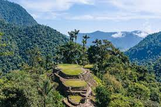
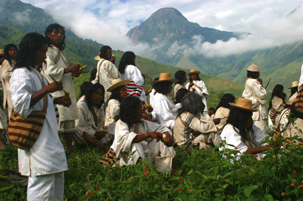
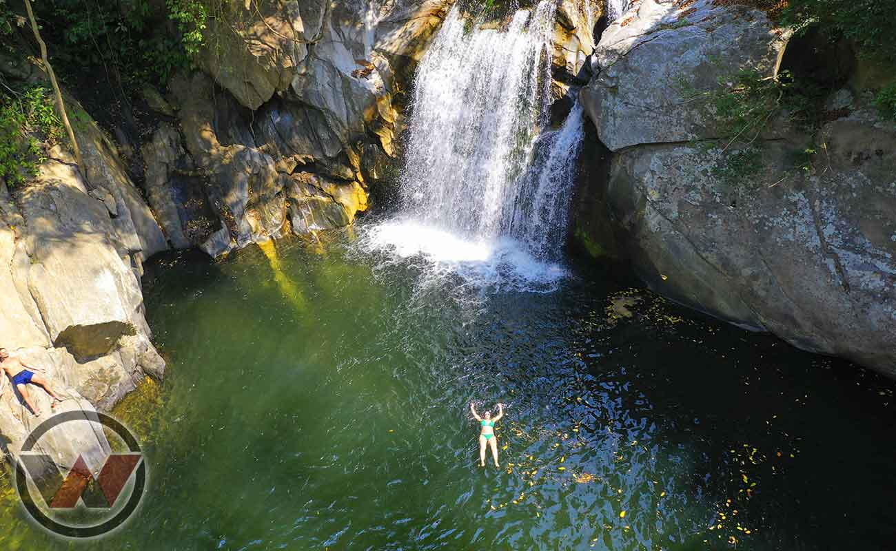
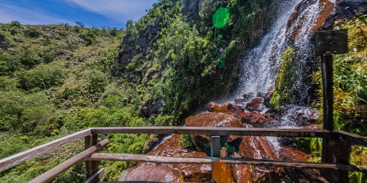

¿En dónde practicar ecoturismo en Colombia??




Colombia es el destino ideal para todos aquellos viajeros que busquen explorar y conocer de cerca las maravillas naturales del mundo. Aunque existen muchos sitios en el país donde puedes practicar el ecoturismo, estos son los más visitados:
Parque Nacional Natural Los Nevados
Isla Gorgona
Amazonas
Alta Guajira
Ensenada de Utría
Parque Nacional Natural Puracé
Parque Nacional Natural Tayrona
Santuario de Fauna y Flora Iguaque
Parque Nacional Natural Cueva de los Guácharos
Parque Nacional Natural Corales del Rosario y de San Bernardo